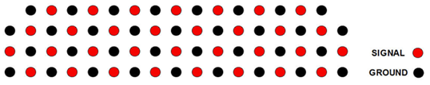

Layout recommendations
The layout of the DUT board is specific to each DUT, with the device specifications determining the layout rules. The following rules are general recommendations based on experience. Use of nonstandard DUT sockets and additional docking equipment often requires changes to the layout rules to achieve the required DUT board performance.
General
- Micro-strip traces require some mechanical considerations. If micro-strip traces are placed on the bottom surface of a DUT board, the performance of these traces will be substantially impacted by the presence of the DUT board stiffener. If placed on the top surface of a DUT board, the metal surfaces of the handler will cause an unpredictable variation in the impedance of the traces. Although placing DUT board traces on the top surface can simplify transitions at the DUT socket, be sure to include the effects caused by the metal handler in your impedance calculations if you use such traces.
- FR-4 epoxy-fiberglass should be considered the minimum acceptable material to use as a DUT board dielectric. If the board will be used for at-temperature testing, a temperature-rated version should be used. Applications requiring exceptionally good performance at high frequencies or high speeds often require the use of more thoroughly characterized dielectrics such as GETEK or other low-loss microwave dielectrics.
- Use pogo landing holes or plated through holes as contacts for pogo pins. Do not use plane pads. A landing hole provides a 3-point signal trace contact while a plane pad has a single contact point. With continued use, abrasive wear will reduce the contact quality. This will be have a greater effect on a plane pad connection than on a landing hole connection.
- For the recommended size of pogo pads, refer to Minimum pad size in Pogo pad and via design.
- For most applications, a trace width of 8-10 mil will provide sufficient bandwidth.
- As a rule of thumb, doubling the trace width increases the bandwidth by a factor of four. Wider traces also have less variation along their length and therefore offer a higher transmission quality.
- Plan the layout of a DUT board for high-speed signals carefully. Any imperfections in the transmission line will increasingly distort the signal and signal quality will deteriorate.
- Design high-speed signal traces with a minimum trace width of 12 mil (0.3 mm) to reduce skin effects and attenuation.
- Place high-speed traces on the inner layers of the board. Process tolerances are usually tighter on these layers, resulting in better impedance matching.
- Mount and label some test pins on the DUT board to which the probe of an external instrument or oscilloscope can be attached for use in troubleshooting.
Insulation from test system and handler mechanical parts
- Insulate all signal and ground lines and pads on the DUT board from the stiffener to minimize capacitive coupling to the metal area of the stiffener.
- Do not route signal lines on the bottom of the board.
- It is strongly recommended that you route traces on the inner layers of the board whenever possible. If you must put traces on the DUT board's top and bottom surfaces, make sure that no coupling or shorting between the handler and DUT board can occur.
- An insulation sheet with a maximum thickness of 0.2 mm can be used between the stiffener and the DUT board if signal lines or pads placed on the board's surface touch the stiffener. Do not exceed 0.2 mm for insulation sheet thickness because a thicker sheet will reduce the travel of the pogo pins. Without the insulation sheet, these signal traces may short out or couple to the stiffener. Milling of areas on the stiffener is not recommended since this weakens its mechanical stability and rigidity and can reduce the flatness of the DUT board assembly.
- Do not use solder mask as an insulator. It is not thick enough or durable enough to provide reliable insulation.
Maintaining DUT board compatibility
Advantest recommends to add unconnected via holes as needed so that the DUT board can be used on systems with a higher pin count. Without via holes or plated pads, the pogo pins of the DUT interface may damage the unprotected surface of the DUT board and generate debris. To accommodate higher density pogo blocks, like Pin Scale 1600 with 32 signal pins per block, we recommend to use the following landing pad scheme with four positions per signal row.

Keep the bottom of the DUT board in the pogo block area free of any connectors or components, other than pogo pads and via holes. This will maintain DUT board compatibility if the system is upgraded.
Keep-Out Areas
Take care when placing traces on the board's outer layers. When a parts handler is used, the board's surface is close to the metal of the handler and could cause inductive or capacitive coupling or a short circuit. Only low-speed traces should be placed on the DUT board's outer layers, even if an additional insulation sheet is used.
- Follow DUT board keep-out area drawings when routing traces and placing components on the
bottom of the board. Refer to the following drawings:
- E6980-96530 - 2-group half-size DUT board without stiffener inlay
- E6980-96540 - 4-group small-size DUT board without stiffener inlay
- E6980-96550 - 8-group large-size DUT board without stiffener inlay
- N2360-90030 for small-size and large-size DUT board when using E6980DC/E6980DD inlay
- N2360-90045 and N2360-90046 for small-size and large-size DUT boards when using E7991A-032 or E7991A-033 RF inlay
- Traces are allowed on the top (DUT) side of the board (except in landing pad and mechanical hole areas).
- The stiffener will lie flush against the bottom surface of the PCB at every point except in the landing pad areas.
Functional changes
- Introduced before SmarTest 6.3.2